Computer Vision Project 1
CS180 | Etai Abukasis
Overview
The goal of this project is to take the digitized Prokudin-Gorskii glass plate images and automatically produce color images by aligning the three color channel images. Prokudin-Gorskii captured + his photographs by recording three exposures of every scene onto a glass plate using red, green, and blue filters, and this project reconstructs the original color by extracting and aligning these channels.
Approach
Part 1: Small .jpg Images
For smaller photos, I implemented an exhaustive search over a displacement window of 15 pixels to find the best alignment for the red and green channels that minimizes error with the blue channel. I went with SSD for the scoring metric, and crop 10% of the image edges before processing to avoid having the borders affect the alignment.
Part 2: Pyramid Speedup on Large .tif Images
The previous algorithm wouldn't work on larger .tif images due to taking too long, so I used an image pyramid. Images are recursively downsampled by half using skimage.transform.resize until reaching below 100 pixels. Starting from the coarsest scale, I find an initial alignment, then refine it at each larger scale by searching a 5x5 window around the scaled up displacement. For difficult images like Emir where the initial alignment creates shifts over 50 pixels, the algorithm falls back to using edge features computed from image gradients.
Results
Below are the results with calculated displacements (dx, dy) for the Green and Red channels relative to the Blue channel.


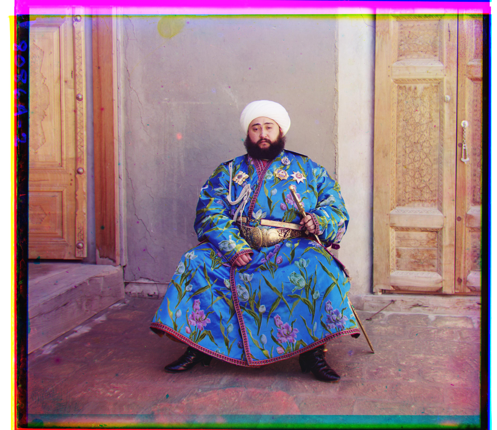
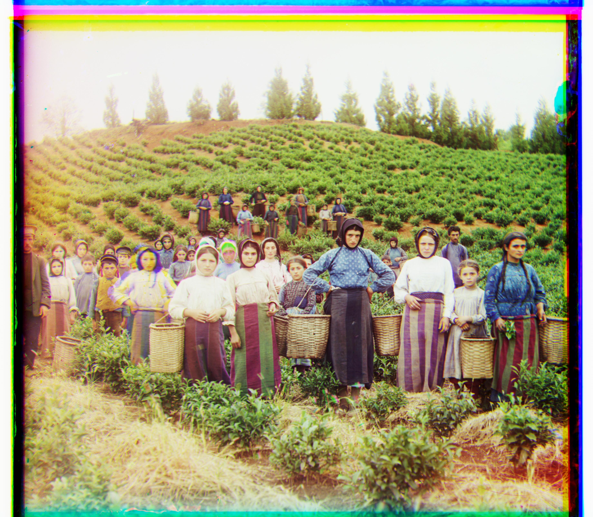
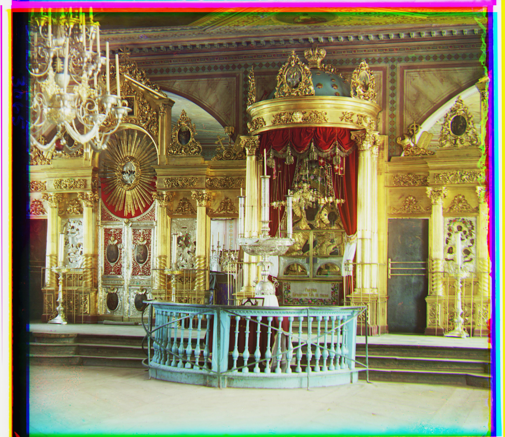
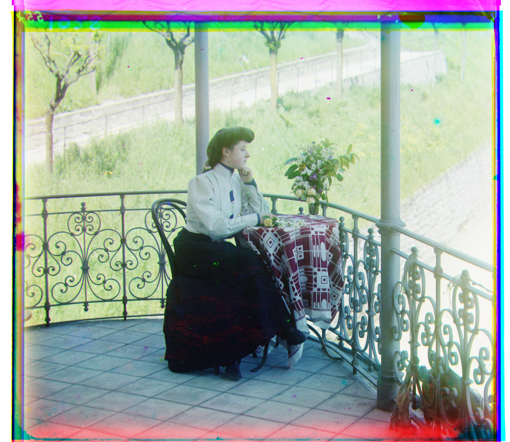
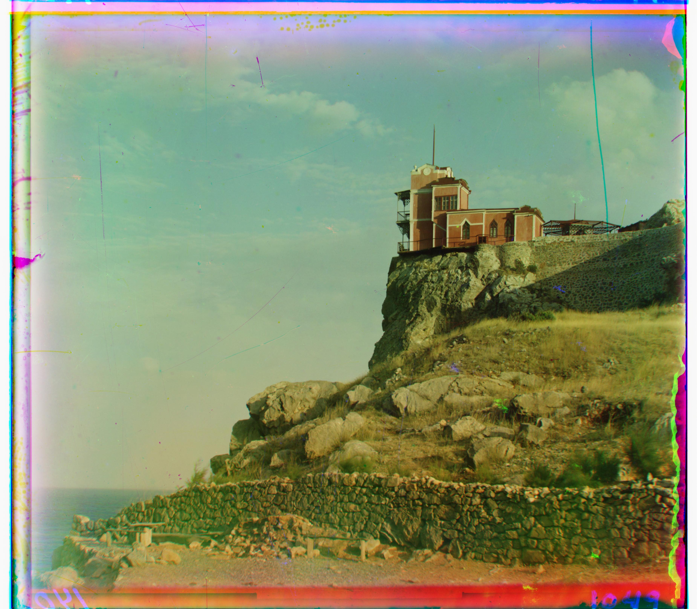
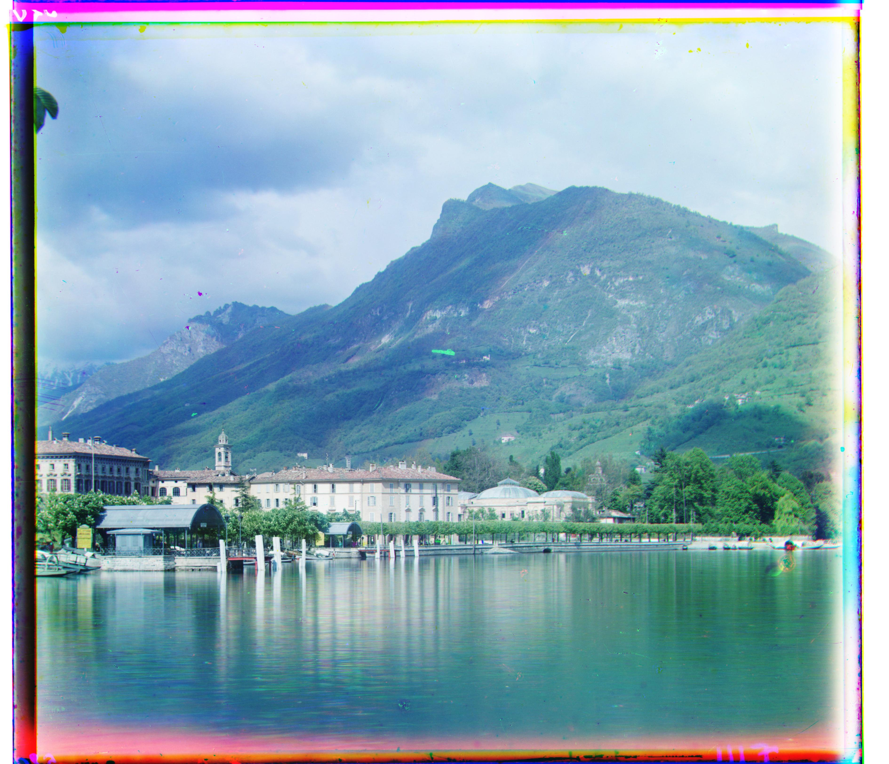
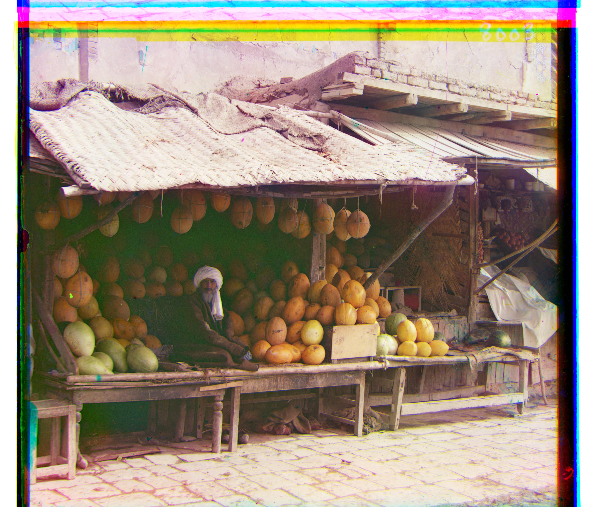
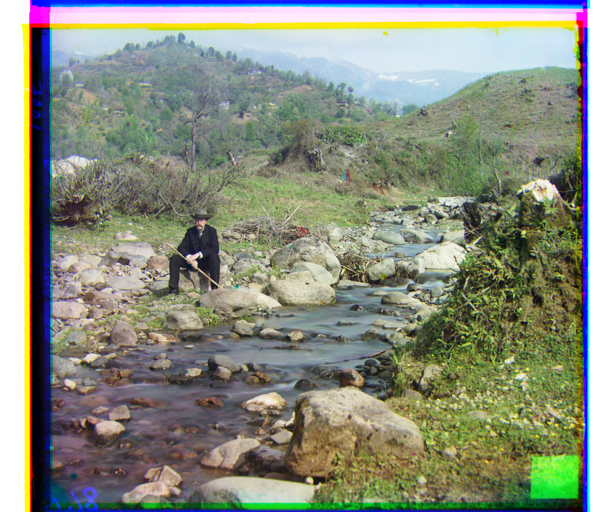
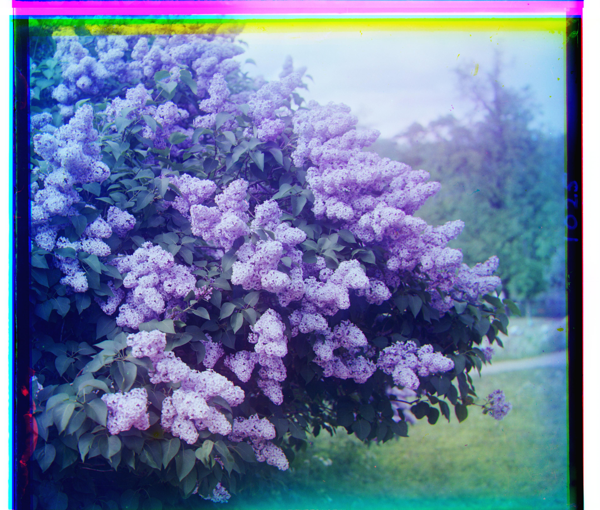

Additional Images from the Collection
Here are additional images I selected from the Prokudin-Gorskii collection:
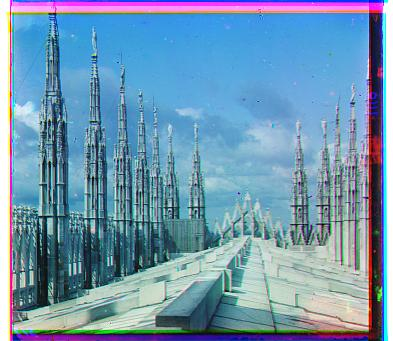
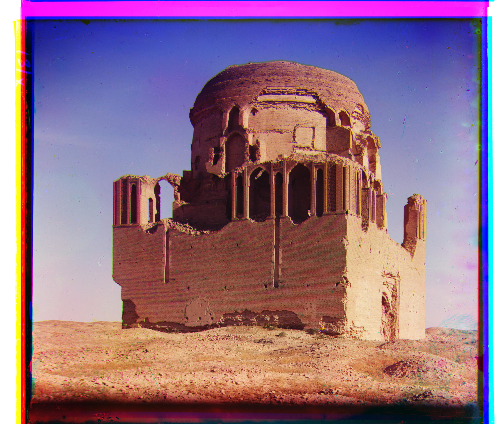
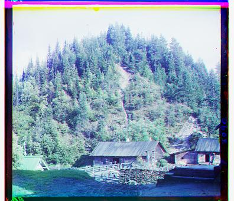